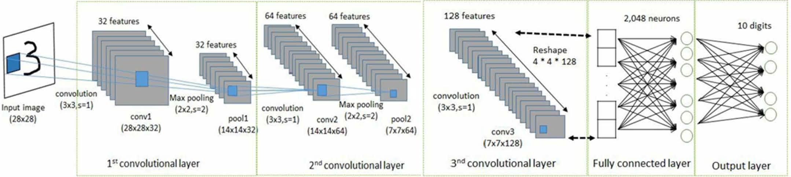

Create a virtualenv environment by issuing the following command:
virtualenv --system-site-packages targetDirectory
The targetDirectory specifies the top of the virtualenv tree. Our instructions assume that targetDirectory is ~/tensorflow, but you may choose any directory.
Activate the virtualenv environment by issuing one of the following commands:
source ~/tensorflow/bin/activate # bash, sh, ksh, or zsh source ~/tensorflow/bin/activate.csh # csh or tcsh
The preceding source command should change your prompt to the following:
(tensorflow)$
Issue one of the following commands to install TensorFlow in the active virtualenv environment:
If you have 1) NVIDIA® GPU with Compute Capability 3.0 or higher and 2) cuDNN v5.1 v3 or greater then you can install tensorflow-gpu, which os prepared to run on one and multiple NVIDIA GPUs.
(tensorflow)$ pip install --upgrade tensorflow-gpu # for Python 2.7 and GPU (tensorflow)$ pip3 install --upgrade tensorflow-gpu # for Python 3.n and GPU
If you don't have GPUs with the mentioned characteristics then:
(tensorflow)$ pip install --upgrade tensorflow # for Python 2.7 (tensorflow)$ pip3 install --upgrade tensorflow # for Python 3.n
Check the location where pip installed tensorflow packages
pip show tensorflow
Check the installation has been done successfully
Save the following short program as hello.py:
import tensorflow as tfhello = tf.constant('Hello, TensorFlow!')sess = tf.Session()print(sess.run(hello))
Run this commandline in your shell as follows:
(tensorflow)$ python hello.py
If the system outputs the following, then you are ready to begin writing TensorFlow programs:
Hello, TensorFlow!
Building my first CNN
To get more familiar with CNNs, let's start with the classification of MNIST database.
The first successful CNN in MNIST classification is called LeNet.
Let's implement a LeNet-5-like CNN shown in the figure.

complete lines 43-48 with the correct dimensions.
the code can be run as:
python convolutional.py # train on CPU/GPU depending on the installation
or
CUDA_VISIBLE_DEVICES=0,1 python convolutional.py # train on selected GPUs with identifiers 0 and 1
Classify Imagenet
cd models/tutorials/image/imagenet python classify_image.py
If the model runs correctly, the script will produce the top five classes with their respective scores.
If you wish to supply other JPEG images, you may do so by editing the --image_file argument.
If you download the model data to a different directory, you will need to point --model_dir to the directory used.
Transfer Learning: Retrain on a New dataset
This consists of finetuning GoogLeNet's final layer on a new dataset, flower_photos, as follows:
Download new dataset
cd ~ curl -O http://download.tensorflow.org/example_images/flower_photos.tgz tar xzf flower_photos.tgz
Download retrain.py
cd ~/tensorflow/lib/python2.7/site-packages/tensorflow/examples/ mkdir image_retraining curl -O https://raw.githubusercontent.com/tensorflow/tensorflow/r1.1/tensorflow/examples/image_retraining/retrain.py
Have a look at retrain.py and costumize where you want to download the GoogLeNet, also called Inception model, bottelneck, . By default the model is downloaded in /tmp.
python retrain.py --image_dir ~/flower_photos {add your args here}
This script 1) loads the pre-trained GoogLeNet model, 2) removes the old top FC layer, also called Bottleneck, and 3) trains a new one
on the flower photos you've downloaded. None of the flower species were in the original ImageNet classes the full network was
trained on. The magic of transfer learning, also called fine-tuning, is that lower layers that have been trained to distinguish
between some objects can be reused for many recognition tasks without any alteration.
To test the retrained model use this script label_image.py
python label_image.py $TEST_IMAGE_PATH
Important terminology in DL
batch size
Convolutional Neural Networks (CNNs) do not process the images one-at-a-time. To increase their throughput, CNNs
process the data in batches. Suppose a CNN that is trained on RGB (3-channel) images that are 256x256 pixels.
A single image can be represented by a 3 x 256 x 256 matrix. If you set your batch size to be 10,
that means you’re concatenating 10 images together into a 10 x 3 x 256 x 256 matrix. In practice, you’ll create
batches of data that are randomly selected from your training set.
This is the ‘stochastic’ part of stochastic gradient descent (SGD). During a single forward and backward pass of
training, the network will update its parameters according to what’s in the batch. This is why the selection has to be
random - if you feed in a batch of only dog images, the CNN will become a little more eager to classify images as
dogs after that training iteration.
Tuning the batch size is one of the aspects of getting training right - if your batch size is too small, then there will be a
lot of variance within a batch, and your training loss curve will bounce around a lot. But if it’s too large, your GPU will run out of memory to hold it, or training will progress too slowly to see if it’s the optimization is diverging early on.
I think you’ll also find the answers to this question helpful:
Intuitively, how does mini-batch size affect the performance of (stochastic) gradient descent?